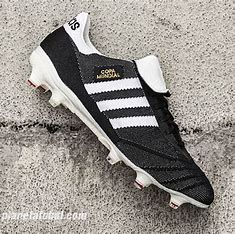
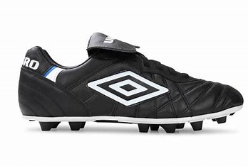
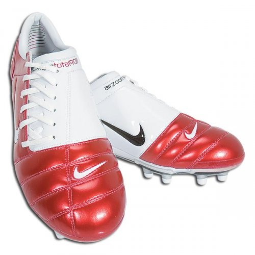
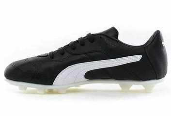

ADIDAS, COPA MUNDIAL -El lanzamiento de los adidas Copa Mundial se remonta al año 1979, cuando la marca
alemana decidió crear un modelo de botas especialmente diseñado para la Copa Mundial de Fútbol que se
celebraría en España en 1982.
NIKE, TOTAL 90 -Los botines Nike Total 90 son una línea icónica de calzado deportivo lanzada por Nike en el
año
2000. Diseñados específicamente para el fútbol, estos botines se destacaron por su enfoque en la precisión y
el
poder del disparo.
UMBRO, SPECIALI -Elaborada con una construcción de cuero fino en Italia, es una de las botas más ligeras que
el
dinero puede comprar.
PUMA, BORUSSIA -Puma lanzó los botines Borussia en 1981, y rápidamente se convirtieron en un ícono gracias a
su
diseño y calidad. Estos botines ganaron notoriedad cuando Diego Maradona